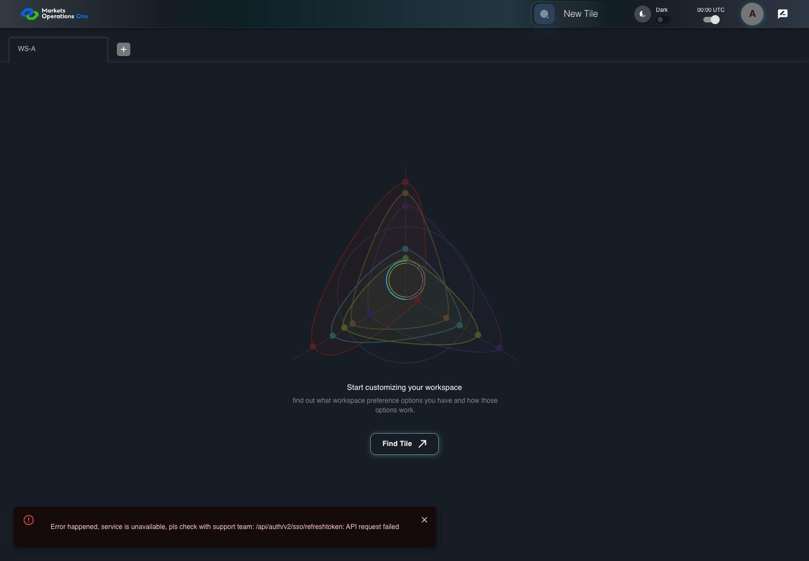

AUTH-060 retry acquisition after network failure
PASS · application/run-050/auth-060-retry-acquisition-after-network-failure-368f81b7cfa4-attempt-1 · ACTUAL_APPLICATION_LOCAL_SERVICES
Actual MFE; controlled API responses, clock, visibility and suspension adapters. Unsigned browser-only credentials. No natural lifecycle, real identity or service policy acceptance.
2026-10-22T06:05:10.244Z to 2026-10-22T06:05:13.434Z
Assertions and result · Artifact manifest · Exact run inputs and source hashes
Result SHA-256:7d8845f0eebae8e693d01218da460b6dd07110d733021e8d7dbdd43268afec18Machine observations
- session-fixture.json
7b31387691d9ae3e051fec1f357a66e4c11e5277660a63d502eaf06b8636217b - session-observations.json
52f15cb35a0735a908b11cd6412c345c361b40383ec54d3e6a3de1f46001e2ad
Screenshot capture: CAPTURED. Named frames: 12.
Step screenshot evidence: COMPLETE. 11/11 canonical steps have execution screenshots.
Canonical step timeline
Given User A is authenticated as user-a in an isolated browser context
Execution: PASSED.
1. step-01 Visible state after step 1: Given User A is authenticated as user-a in an isolated browser context
2026-10-22T06:05:11.975Z · 1440×1000
Step: /Users/lushevol/code/github/ratan-release-impact/workbench/tasks/ui-test-coverage-20261022/test-cases.md:2283
SHA-256:0712c3f55455954e6d35b836023a1f2355851f08e119e269da9cda84dc0bcfd4And the selected fixture tab is labelled "WS-A" inside the tablist named "workspaces" on the Home page
Execution: PASSED.
2. step-02 Visible state after step 2: And the selected fixture tab is labelled "WS-A" inside the tablist named "workspaces" on the Home page
2026-10-22T06:05:12.073Z · 1440×1000
Step: /Users/lushevol/code/github/ratan-release-impact/workbench/tasks/ui-test-coverage-20261022/test-cases.md:2284
SHA-256:0712c3f55455954e6d35b836023a1f2355851f08e119e269da9cda84dc0bcfd4And access A expires at controlled time T+900 seconds; no refresh credential exists
Execution: PASSED.
3. step-03 Visible state after step 3: And access A expires at controlled time T+900 seconds; no refresh credential exists
2026-10-22T06:05:12.179Z · 1440×1000
Step: /Users/lushevol/code/github/ratan-release-impact/workbench/tasks/ui-test-coverage-20261022/test-cases.md:2285
SHA-256:0712c3f55455954e6d35b836023a1f2355851f08e119e269da9cda84dc0bcfd4And the page is hidden after its first acquisition failed with "Network Error"
Execution: PASSED.
4. step-04 Visible state after step 4: And the page is hidden after its first acquisition failed with "Network Error"
2026-10-22T06:05:12.388Z · 1440×1000
Step: /Users/lushevol/code/github/ratan-release-impact/workbench/tasks/ui-test-coverage-20261022/test-cases.md:2286
SHA-256:93bd5943d3ca6478b1497b8c5d98bd61c1cf9c962567d45a401d866492b1cdbcAnd request counts restart after that failure
Execution: PASSED.5. step-05 Visible state after step 5: And request counts restart after that failure
2026-10-22T06:05:12.471Z · 1440×1000
Step: /Users/lushevol/code/github/ratan-release-impact/workbench/tasks/ui-test-coverage-20261022/test-cases.md:2287
SHA-256:93bd5943d3ca6478b1497b8c5d98bd61c1cf9c962567d45a401d866492b1cdbcWhen the browser changes this page from hidden to visible
Execution: PASSED.
6. step-06 Visible state after step 6: When the browser changes this page from hidden to visible
2026-10-22T06:05:12.561Z · 1440×1000
Step: /Users/lushevol/code/github/ratan-release-impact/workbench/tasks/ui-test-coverage-20261022/test-cases.md:2288
SHA-256:93bd5943d3ca6478b1497b8c5d98bd61c1cf9c962567d45a401d866492b1cdbcAnd the browser changes this page from visible to hidden
Execution: PASSED.
7. step-07 Visible state after step 7: And the browser changes this page from visible to hidden
2026-10-22T06:05:12.678Z · 1440×1000
Step: /Users/lushevol/code/github/ratan-release-impact/workbench/tasks/ui-test-coverage-20261022/test-cases.md:2289
SHA-256:a037ef2ffb9232d3573c30a392e8344a408add663451e1d194196967b9b32c1cThen the browser records exactly 1 new POST requests to "/api/auth/v2/sso/refreshtoken"
Execution: PASSED.
8. step-08 Visible state after step 8: Then the browser records exactly 1 new POST requests to "/api/auth/v2/sso/refreshtoken"
2026-10-22T06:05:12.753Z · 1440×1000
Step: /Users/lushevol/code/github/ratan-release-impact/workbench/tasks/ui-test-coverage-20261022/test-cases.md:2290
SHA-256:a037ef2ffb9232d3573c30a392e8344a408add663451e1d194196967b9b32c1cWhen the fixture accepts the replacement acquisition
Execution: PASSED.9. step-09 Visible state after step 9: When the fixture accepts the replacement acquisition
2026-10-22T06:05:12.828Z · 1440×1000
Step: /Users/lushevol/code/github/ratan-release-impact/workbench/tasks/ui-test-coverage-20261022/test-cases.md:2291
SHA-256:bb785e363f67480f4ef93a5e99e1cb346f962ca28b91f43a400e0e6bce2f2f6dAnd the browser changes this page from hidden to visible
Execution: PASSED.
10. step-10 Visible state after step 10: And the browser changes this page from hidden to visible
2026-10-22T06:05:12.911Z · 1440×1000
Step: /Users/lushevol/code/github/ratan-release-impact/workbench/tasks/ui-test-coverage-20261022/test-cases.md:2292
SHA-256:bb785e363f67480f4ef93a5e99e1cb346f962ca28b91f43a400e0e6bce2f2f6dThen the tab labelled "WS-A" inside the tablist named "workspaces" on the Home page is visible
Execution: PASSED.
11. step-11 Visible state after step 11: Then the tab labelled "WS-A" inside the tablist named "workspaces" on the Home page is visible
2026-10-22T06:05:13.003Z · 1440×1000
Step: /Users/lushevol/code/github/ratan-release-impact/workbench/tasks/ui-test-coverage-20261022/test-cases.md:2293
SHA-256:bb785e363f67480f4ef93a5e99e1cb346f962ca28b91f43a400e0e6bce2f2f6d
Additional named frames

The final visible state after the named test assertions.
2026-10-22T06:05:13.140Z · 1440×1000Step: Test source: /Users/lushevol/code/github/ratan-release-impact/workbench/e2e/audit-specs/auth-session-expanded.spec.ts:76
SHA-256:
bb785e363f67480f4ef93a5e99e1cb346f962ca28b91f43a400e0e6bce2f2f6dScreenshots establish visible state only. Assertions and traces support functional claims.